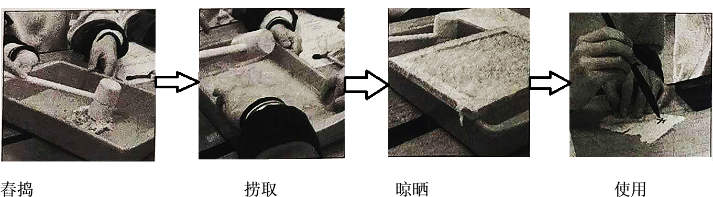
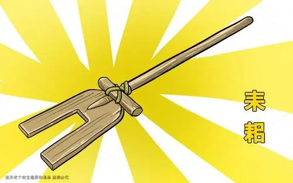
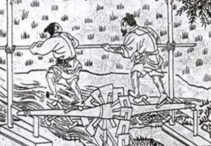
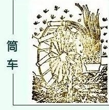

2021年北京市中考历史试题 · 选择题 第1、2、3、4、5题 · 对应解析
1. 夏、商、西周三代是中华文明的第一个高峰期，这一时期精神文明的表征是甲骨文的应用，物质文明的集中表现则是
A. 打制石器B. 原始陶器C. 青铜铸造D. 瓷器烧制
【答案】C
【解析】
【详解】依据所学知识，夏、商、西周时期物质文明 集中表现是青铜铸造业的发达，青铜器种类丰富，数量众多，制作工艺高超，被誉为青铜时代，C正确，D排除；打制石器、原始陶器是在原始社会时期，AB排除。故选C。
集中表现是青铜铸造业的发达，青铜器种类丰富，数量众多，制作工艺高超，被誉为青铜时代，C正确，D排除；打制石器、原始陶器是在原始社会时期，AB排除。故选C。
2. 以下是中国古代一位历史人物年谱（部分）。对此解读正确的是
公元前 141年 | 公元前 136年 | 公元前 129年 | 公元前 127年 | 公元前 118年 | 公元前 87年 |
即皇帝位 | 置五经博士 | 派卫青等北击匈奴 | 颁布“推恩令” | 下令铸造五铢钱 | 崩，葬于茂陵 |
A. 该年谱用年号纪年
B. 秦始皇开创了皇帝制度
C. 该帝王在位35年
D. 汉武帝巩固大一统王朝
【答案】D
【解析】
【详解】根据所学可知，汉武帝时，颁布“推恩令”，削弱王国势力，汉武帝时，采取多种措施，使大一统国家得到巩固，故选D；材料中年谱不是用年号纪年，排除A；材料反映的是汉武帝，B不符合题意，排除；汉武帝在位54年，C错误。
3. 某班同学为体验我国古代一项伟大发明的工艺流程，进行了以下实践活动。这项发明

A. 对作战方式产生了巨大影响
B. 发展中医学的治疗理论
C. 促进了远洋航海技术的发展
D. 推动文化的传播和发展
【答案】D
【解析】
【详解】材料反映的造纸术的工艺流程，造纸术推动了文化的传播和发展，故选D；火药的发明对作战方式产生巨大影响，与造纸术无关，排除A；材料反映的是造纸术，B项与材料信息无关，排除B；指南针促进了远洋航海技术的发展，不符合题意，排除C。
4. 有者认为：安史之乱后唐朝能够延续,这项工程发挥了重要作用。它的功用不仅是南粮北调，更是把南北融为一体。材料中的“这项工程”是
A. 都江堰B. 灵渠C. 大运河D. 长城
【答案】C
【解析】
【详解】隋朝开凿大运河，促进了南北经济文化交流，也便利了南粮北调，故选C；都江堰位于四川，不符合“南粮北运”“把南北融为一体”，排除A；秦朝修灵渠，主要用于军事，不符合“南粮北运”，排除B；长城位于我国北方，修筑的目的是防御匈奴的进攻，不符合“把南北融为一体”，排除D。
5. 以下两组图片共同反映的主题是



A. 政治制度完备
B. 农业技术进步
C. 海外贸易发达
D. 文学艺术繁荣
【答案】B
【解析】
【详解】骨耜、曲辕犁是耕作工具，翻车、筒车是灌溉工具，都反映了农业技术的进步，故选B；材料中的农业工具，与政治制度、海外贸易、文学艺术无关，排除ACD。